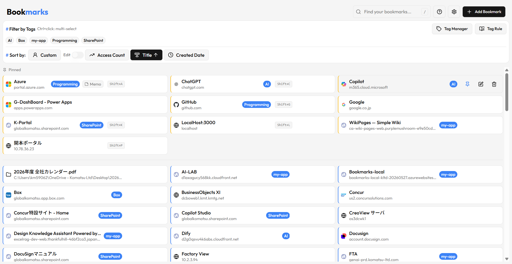
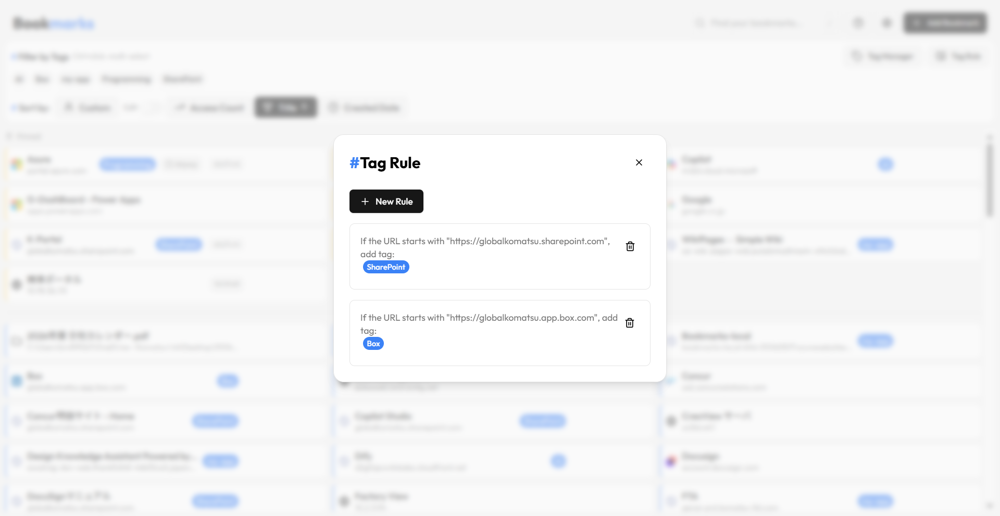
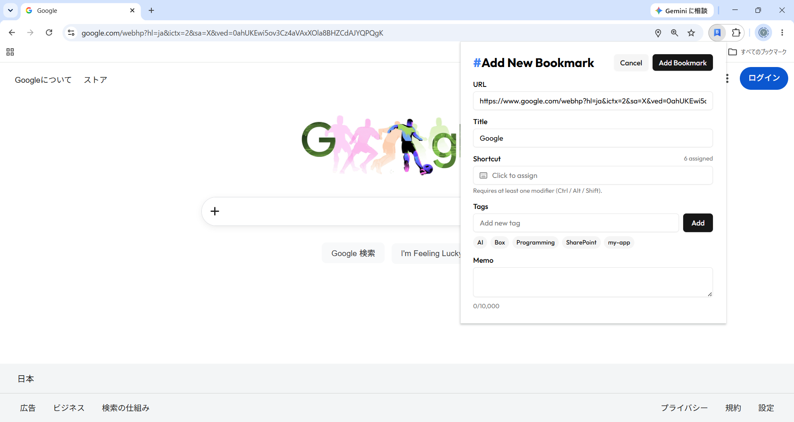

ブックマーク管理デスクトップアプリ
グローバルホットキーで呼び出し、URL・ファイル・フォルダをタグとメモで一元管理します。
Chrome / Edge 拡張やエクスプローラからワンクリックで追加し、
リアルタイム検索とショートカットで目的のページへすばやくアクセスできます。

#主な機能
日常業務の効率化に役立つ機能を一通り備えています。
#グローバルホットキー
どのアプリで作業中でも Ctrl+Alt+Space で前面に呼び出し、検索バーにフォーカス。ブックマークごとの個別ショートカットにも対応します。
#完全ローカル保存
データはすべて手元の SQLite に保存。クラウド同期も外部送信もありません。
#ブラウザ拡張
Chrome / Edge 拡張から、開いているページをワンクリックでブックマークに追加できます。
#エクスプローラ連携
エクスプローラのドラッグ&ドロップや右クリックメニューから、ファイル・フォルダも登録できます。
#タグ & 自動タグ付けルール
複数タグでのフィルタリングに加え、URL やタイトルのパターンに基づく自動タグ付けルールを設定可能。追加するだけで自動的に整理されます。
#メモ
ブックマークごとに最大 10,000 文字のメモを添付。カードの Memo バッジにホバーでプレビュー、クリックでコピー。
#リアルタイム検索 + 履歴
タイトル・URL・メモを横断してリアルタイムに絞り込み。/ キーで検索バーへ即フォーカス。検索履歴は最大 10 件まで保存されます。
#ピン留め & 並べ替え
よく使うブックマークは上部に固定表示。ドラッグ&ドロップによるカスタム並べ替えや、アクセス回数・作成日でのソートに対応します。
#インポート / エクスポート
ブラウザからエクスポートした HTML をそのままインポート。HTML エクスポートや JSON バックアップ / 復元にも対応します。
#重複チェック
インポートや追加の際に既存のブックマークと URL を照合し、重複の登録を防ぎます。

